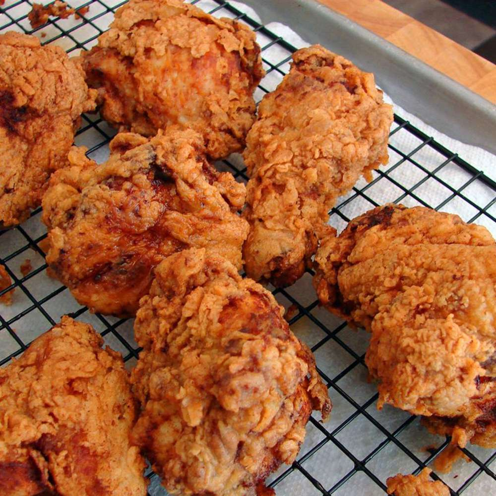

Fried Chicken

Description
This buttermilk fried chicken recipe results in chicken that’s wonderfully crispy on the outside, but tender and juicy on the inside.
The best buttermilk fried chicken recipe delivers tender, juicy meat and a delightfully crunchy, golden-brown crust for a flavor-packed meal sure to please everyone at the table.
Ingredients
Buttermilk Soak
- 3 cups buttermilk
- 2 tablespoons kosher salt
- 1 tablespoon freshly ground black pepper
- 2 teaspoons cayenne pepper
- 4 pounds chicken parts, including medium chicken wings, thighs, and drumsticks
Flour Dredge
- 2 cups all-purpose flour
- 1 teaspoon onion powder
- 1 teaspoon garlic powder
- 1 teaspoon of kosher salt
- 1 teaspoon freshly ground black pepper
- 1/2 teaspoon cayenne pepper
- Vegetable oil, for frying
Steps
- Toss the chicken pieces in seasonings, then marinate in buttermilk overnight.
- Make the seasoned flour.
- Dredge each buttermilk-soaked chicken piece in flour and transfer to a plate.
- Fry the chicken until an instant read thermometer reads 165 degrees F.
- Drain on a cooling rack over a paper towel-lined baking sheet.